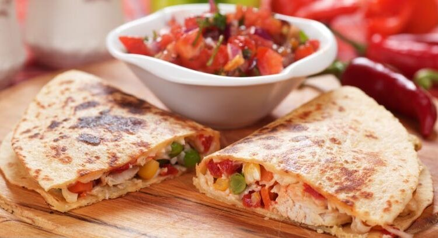

A quesadilla is a Mexican dish that dates back to the 16th century. Traditional quesadillas were made with a corn tortilla that was warmed on a griddle, filled with cheese and various other fillings (meat, vegetables), and then folded over to be eaten by hand.
Heat a large skillet (cast iron works great) on medium high heat. Add a small amount of oil (about 1/2 teaspoon) and spread it around the bottom of the pan with a spatula (you could use butter as well).
Take one large flour tortilla and place it in the pan. Flip the tortilla over a few times, 10 seconds between flips. Air pockets should begin to form within the tortilla.
When pockets of air begin to form, take a handful of grated cheese, sprinkle over the top of the tortilla, making sure that the cheese does not land on the pan itself.
Add whatever additional ingredients you choose - green onion, sliced mushrooms, olives, tomatoes, etc. If you would like your quesadilla to be a chicken quesadilla, add some diced cooked chicken.
Reduce the heat to low and cover the pan. The pan should be hot enough by now to have plenty of residual heat to melt the cheese and brown the tortilla. If the quesadilla begins to smoke too much, remove from the heat.
After a minute, check to see if the cheese is melted. If not, return the cover and keep checking every minute until the cheese is melted.
When the cheese is sufficiently melted, use a spatula to lift up one side of the quesadilla and flip over the other side, as if you were making an omelette
The tortilla should by now be browned slightly. If it is not browned, turn the heat up to high and flip the quesadilla over every 10 seconds or so until it gets browned.